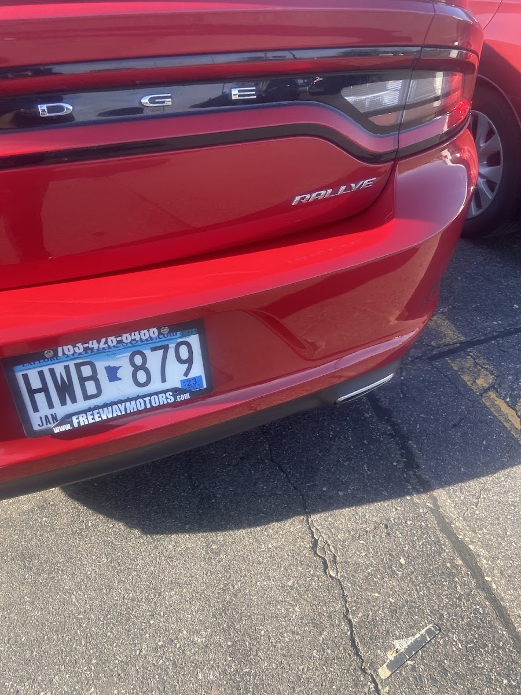

Bumper Repair in South St Paul, MN
Auto Body Lopez repairs and replaces bumpers for drivers across South St Paul and the south metro — cracked, dented, or torn-loose bumpers fixed when they can be saved, replaced and color-matched when they can't.
Bumper Repair South St Paul Drivers Count On
If you need bumper repair in South St Paul MN, the first question is usually the same one we ask: can this bumper be fixed, or does it need to be replaced? A bumper takes the first hit in most low-speed collisions and parking lot mishaps, and it's built to absorb some of that impact — which means it's often repairable even when it looks bad. Auto Body Lopez looks at the cover, the reinforcement bar underneath, and the mounting points before deciding, then repairs what can be saved and sources a replacement, color-matched to your vehicle, when it can't.
What Our Bumper Repair & Replacement Covers
Bumper damage ranges from a small crack to a bumper that's hanging loose, so we handle the full range:
- Crack and split repair — plastic welding and filling for cracked or split bumper covers that don't need full replacement.
- Dent and scuff repair — reshaping and refinishing dented or scraped bumper covers.
- Bumper replacement — sourcing and installing a new bumper cover when the damage is beyond repair.
- Reinforcement bar and mount repair — addressing the structure and mounting points behind the cover, not just the visible plastic.
- Color-matched paint — finishing a repaired or replaced bumper so it matches the rest of the vehicle exactly.
- Sensor and trim reinstallation — parking sensors, trim, and other bumper-mounted parts reinstalled correctly.
Whether it's a crack you want gone or a bumper hanging by a clip, we sort out what it actually needs before quoting the job.
Signs You Need Bumper Repair
Some bumper damage is obvious. Some is worth a second look:
- A cracked, split, or dented bumper cover after a bump or low-speed collision.
- A bumper that's hanging, loose, or pulling away from its mounts.
- Scrapes or scuffs down to primer or bare plastic.
- A bumper that no longer sits flush or lines up with the surrounding panels.
- Cracked or missing trim, sensors, or fog light housings near the bumper.
- Any impact to the front or rear of the vehicle, even one that looks minor.
A bumper that looks fine from a few feet away can still have a cracked mount or a reinforcement bar that took the hit, so it's worth having it checked after any impact.
What to Expect
We start by looking at the cover, the reinforcement bar behind it, and the mounting points to figure out whether the bumper can be repaired or needs to be replaced. If it's repairable, we fill, weld, or reshape the plastic and refinish it to match your vehicle's color. If it needs replacing, we source a bumper for your specific vehicle and paint it to match before it goes on. Either way, we make sure sensors, trim, and mounting hardware go back exactly where they belong. A straightforward bumper repair or swap is often a quicker turnaround than a full collision job, and we'll give you a realistic timeline once we've seen the damage.
Why Bumper Repair Matters More in a Minnesota Winter
South St Paul winters bring more bumper damage than any other season — ice, snow-covered curbs, and low-visibility conditions all add up to more parking lot bumps and low-speed impacts between November and March. A cracked bumper cover left unaddressed also lets road salt and moisture in around the mounting points, which can turn a simple crack into a bigger repair by spring. Getting a cracked or loose bumper fixed before winter really sets in is one of the easiest ways to avoid a small repair turning into a bigger one.

Areas We Serve
We're based at 1449 Concord St S in South St Paul (South Saint Paul), Minnesota, and handle bumper repair and replacement for drivers throughout South St Paul, West St Paul, Inver Grove Heights, and Dakota County, as well as the broader south metro.
Why Drivers Choose Auto Body Lopez for Bumper Repair
You get a shop that tells you honestly whether your bumper can be repaired or needs to be replaced, at a fair, reasonable price either way. One customer came in thinking their bumper needed a quick fix, but the accident meant the installation required some welding as well — our crew got it done on time and exceeded expectations, the kind of local shop experience that competes with the bigger names. That's the same straightforward approach we bring to every bumper job, big or small.
Bumper Repair FAQ
Most auto insurance policies with collision coverage help pay for bumper repair or replacement after an accident, but coverage depends on your specific policy and provider. Check with your insurance company, and call (651) 756-8621 for a repair estimate to bring to them.
Often, yes — many cracks and splits in a bumper cover can be repaired and refinished rather than replaced outright. We inspect the cover, the reinforcement bar, and the mounting points to tell you honestly which option makes sense for your vehicle.
It depends on whether the bumper can be repaired or needs full replacement, plus color matching and any sensors or trim involved. We give you a fair, reasonable price after seeing the vehicle. Call or text (651) 756-8621 for a quote.
You can get bumper repair and replacement in South St Paul at Auto Body Lopez, 1449 Concord St S, serving South St Paul, West St Paul, Inver Grove Heights, and Dakota County. Call or text (651) 756-8621.